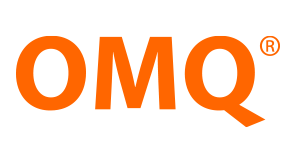

econob is the leading European natural language processing company. It focuses on the automated processing of digital text information. For processing issues semantic intelligence and machine learning algorithms are used. The concepts for analyzing english and german unstructured texts are based on state of the art computational linguistic methods.
Fondazione Bruno
Kessler is charged with keeping the province of Trento in the mainstream of
European and international research. It does so by attracting women, men and
resources at the forefront of technological development and humanities studies.
NICE Systems (NASDAQ: NICE), is the worldwide leader of intent-based solutions that
capture and analyze interactions and transactions, realize intent, and extract and
leverage insights to deliver impact in real time.

OMQ develops software support prodcuts of the next generation. As an innovative, sustainable enterprise OMQ has the aspiration to deliver their customers a support system which combines the latest support technologies and ease of use.